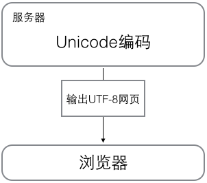

02_02字符串和编码
字符编码
计算机只能处理数字，如果要处理文本，就必须先把文本转换为数字才能处理。最早的计算机在设计时采用8个比特（bit）作为一个字节（byte），所以，一个字节能表示的最大的整数就是255（二进制11111111=十进制255），如果要表示更大的整数，就必须用更多的字节。比如两个字节可以表示的最大整数是65535，4个字节可以表示的最大整数是4294967295。
由于计算机是美国人发明的，因此，最早只有127个字符被编码到计算机里，也就是大小写英文字母、数字和一些符号，这个编码表被称为 ASCII编码，比如大写字母A的编码是65，小写字母z的编码是122。
但是要处理中文显然一个字节是不够的，至少需要两个字节，而且还不能和ASCII编码冲突，所以，中国制定了GB2312编码，用来把中文编进去。
你可以想得到的是，全世界有上百种语言，日本把日文编到Shift_JIS里，韩国把韩文编到Euc-kr里，各国有各国的标准，就会不可避免地出现冲突，结果就是，在多语言混合的文本中，显示出来会有乱码。
因此，Unicode应运而生。Unicode把所有语言都统一到一套编码里，这样就不会再有乱码问题了。
Unicode标准也在不断发展，但最常用的是用两个字节表示一个字符（如果要用到非常偏僻的字符，就需要4个字节）。现代操作系统和大多数编程语言都直接支持Unicode。
现在，捋一捋ASCII编码和Unicode编码的区别：ASCII编码是1个字节，而Unicode编码通常是2个字节。
字母A用ASCII编码是十进制的65，二进制的01000001；
字符0用ASCII编码是十进制的48，二进制的00110000，注意字符'0'和整数0是不同的；
汉字中已经超出了ASCII编码的范围，用Unicode编码是十进制的20013，二进制的01001110 00101101。
你可以猜测，如果把ASCII编码的A用Unicode编码，只需要在前面补0(ASCII 转 Unicode)就可以，因此，A的Unicode编码是00000000 01000001。
新的问题又出现了：如果统一成Unicode编码，乱码问题从此消失了。但是，如果你写的文本基本上全部是英文的话，用Unicode编码比ASCII编码需要多一倍的存储空间，在存储和传输上就十分不划算。
所以，本着节约的精神，又出现了把Unicode编码转化为“可变长编码”的UTF-8编码。UTF-8编码把一个Unicode字符根据不同的数字大小编码成1-6个字节，常用的英文字母被编码成1个字节，汉字通常是3个字节，只有很生僻的字符才会被编码成4-6个字节。如果你要传输的文本包含大量英文字符，用UTF-8编码就能节省空间：
| 字符 | ASCII | Unicode | UTF-8 |
|---|---|---|---|
| A | 01000001 | 00000000 01000001 | 01000001 |
| 中 | x | 01001110 00101101 | 11100100 10111000 10101101 |
从上面的表格还可以发现，UTF-8编码有一个额外的好处，就是ASCII编码实际上可以被看成是UTF-8编码的一部分，所以，大量只支持ASCII编码的历史遗留软件可以在UTF-8编码下继续工作。
搞清楚了ASCII、Unicode和UTF-8的关系，我们就可以总结一下现在计算机系统通用的字符编码工作方式：
在计算机内存中，统一使用Unicode编码，当需要保存到硬盘或者需要传输的时候，就转换为UTF-8编码。
用记事本编辑的时候，从文件读取的UTF-8字符被转换为Unicode字符到内存里，编辑完成后，保存的时候再把Unicode转换为UTF-8保存到文件：

浏览网页的时候，服务器会把动态生成的Unicode内容转换为UTF-8再传输到浏览器：

所以你看到很多网页的源码上会有类似<meta charset="UTF-8" />的信息，表示该网页正是用的UTF-8编码。
python 的字符串
在最新的Python 3版本中，字符串是以Unicode编码的，也就是说，Python的字符串支持多语言，例如：
>>> print('包含中文的str')
包含中文的str
对于单个字符的编码，Python提供了ord()函数获取字符的整数表示，chr()函数把编码转换为对应的字符：
>>> ord('A')
65
>>> ord('中')
20013
>>> chr(66)
'B'
>>> chr(25991)
'文'
如果知道字符的整数编码，还可以用十六进制这么写str：
>>> '\u4e2d\u6587'
'中文'
两种写法完全是等价的。
Str 和 bytes 互转
由于Python的字符串类型是str，在内存中以Unicode表示，一个字符对应若干个字节。如果要在网络上传输，或者保存到磁盘上，就需要把str变为以字节为单位的bytes。
Python对bytes类型的数据用带 b前缀 的单引号或双引号表示：
x = b'ABC'
要注意区分'ABC'和b'ABC'，前者是str，后者虽然内容显示得和前者一样，但bytes的每个字符都只占用一个字节。
以Unicode表示的str通过encode()方法可以编码为指定的bytes，例如：
>>> 'ABC'.encode('ascii')
b'ABC'
>>> '中文'.encode('utf-8')
b'\xe4\xb8\xad\xe6\x96\x87'
>>> '中文'.encode('ascii')
Traceback (most recent call last):
File "<stdin>", line 1, in <module>
UnicodeEncodeError: 'ascii' codec can't encode characters in position 0-1: ordinal not in range(128)
纯英文的str可以用ASCII编码为bytes，内容是一样的，含有中文的str可以用UTF-8编码为bytes。含有中文的str无法用ASCII编码，因为中文编码的范围超过了ASCII编码的范围，Python会报错。
在bytes中，无法显示为ASCII字符的字节，用\x##显示。
反过来，如果我们从网络或磁盘上读取了字节流，那么读到的数据就是bytes。要把bytes变为str，就需要用decode()方法：
>>> b'ABC'.decode('ascii')
'ABC'
>>> b'\xe4\xb8\xad\xe6\x96\x87'.decode('utf-8')
'中文'
如果bytes中包含无法解码的字节，decode()方法会报错：
>>> b'\xe4\xb8\xad\xff'.decode('utf-8')
Traceback (most recent call last):
...
UnicodeDecodeError: 'utf-8' codec can't decode byte 0xff in position 3: invalid start byte
如果bytes中只有一小部分无效的字节，可以传入errors='ignore'忽略错误的字节：
>>> b'\xe4\xb8\xad\xff'.decode('utf-8', errors='ignore')
'中'
len() 函数
要计算str包含多少个字符，可以用len()函数：
>>> len('ABC')
3
>>> len('中文')
2
len()函数计算的是str的字符数，如果换成bytes，len()函数就计算字节数：
>>> len(b'ABC')
3
>>> len(b'\xe4\xb8\xad\xe6\x96\x87')
6
>>> len('中文'.encode('utf-8'))
6
可见，1个中文字符经过UTF-8编码后通常会占用3个字节，而1个英文字符只占用1个字节。
在操作字符串时，我们经常遇到str和bytes的互相转换。为了避免乱码问题，应当始终坚持使用UTF-8编码对str和bytes进行转换。
python 文件的保存
由于Python源代码也是一个文本文件，所以，当你的源代码中包含中文的时候，在保存源代码时，就需要务必指定保存为UTF-8编码。当Python解释器读取源代码时，为了让它按UTF-8编码读取，我们通常在文件开头写上这两行：
#!/usr/bin/env python3
# -*- coding: utf-8 -*-
第一行注释是为了告诉Linux/OS X系统，这是一个Python可执行程序，Windows系统会忽略这个注释；
第二行注释是为了告诉Python解释器，按照UTF-8编码读取源代码(只是声明，实际保存得看编辑器)，否则，你在源代码中写的中文输出可能会有乱码。
申明了UTF-8编码并不意味着你的.py文件就是UTF-8编码的，必须并且要确保文本编辑器正在使用UTF-8 without BOM编码：

如果.py文件本身使用UTF-8编码，并且也申明了# -*- coding: utf-8 -*-，打开命令提示符测试就可以正常显示中文：

格式化
在Python中，采用的格式化方式和C语言是一致的，用%实现，举例如下：
>>> 'Hello, %s' % 'world'
'Hello, world'
>>> 'Hi, %s, you have $%d.' % ('Michael', 1000000)
'Hi, Michael, you have $1000000.'
你可能猜到了，%运算符就是用来格式化字符串的。在字符串内部，%s表示用字符串替换，%d表示用整数替换，有几个%?占位符，后面就跟几个变量或者值，顺序要对应好。如果只有一个%?，括号可以省略。
常见的占位符有：
| 占位符 | 替换内容 |
|---|---|
| %d | 整数 |
| %f | 浮点数 |
| %s | 字符串 |
| %x | 十六进制整数 |
其中，格式化整数和浮点数还可以指定是否补0和整数与小数的位数：
print('%2d-%02d' % (3, 1)) # 各占两位，默认右对齐
print('%.2f' % 3.1415926)
# 3-01
# 3.14
如果你不太确定应该用什么，%s永远起作用，它会把任何数据类型转换为字符串：
>>> 'Age: %s. Gender: %s' % (25, True)
'Age: 25. Gender: True'
有些时候，字符串里面的%是一个普通字符怎么办？这个时候就需要转义，用%%来表示一个%：
>>> 'growth rate: %d %%' % 7
'growth rate: 7 %'
formart()
另一种格式化字符串的方法是使用字符串的format()方法，它会用传入的参数依次替换字符串内的占位符{0}、{1}……，不过这种方式写起来比%要麻烦得多：
>>> 'Hello, {0}, 成绩提升了 {1:.1f}%'.format('小明', 17.125)
'Hello, 小明, 成绩提升了 17.1%'
练习
小明的成绩从去年的72分提升到了今年的85分，请计算小明成绩提升的百分点，并用字符串格式化显示出'xx.x%'，只保留小数点后1位：
下面三种方法都可以。
#!/usr/bin/env python3
# -*- coding: utf-8 -*-
'''
filename: ch02/02.py
message: notes for liaoxuefeng in learning pyhon 3.7
'''
s1 = 72
s2 = 85
r = (s2 - s1)/s1 * 100
print('%.1f%%' % r) # 小数点后1位小数
print('{:.1f}%'.format(r))
print('{0:.1f}%'.format(r))
# 18.1%